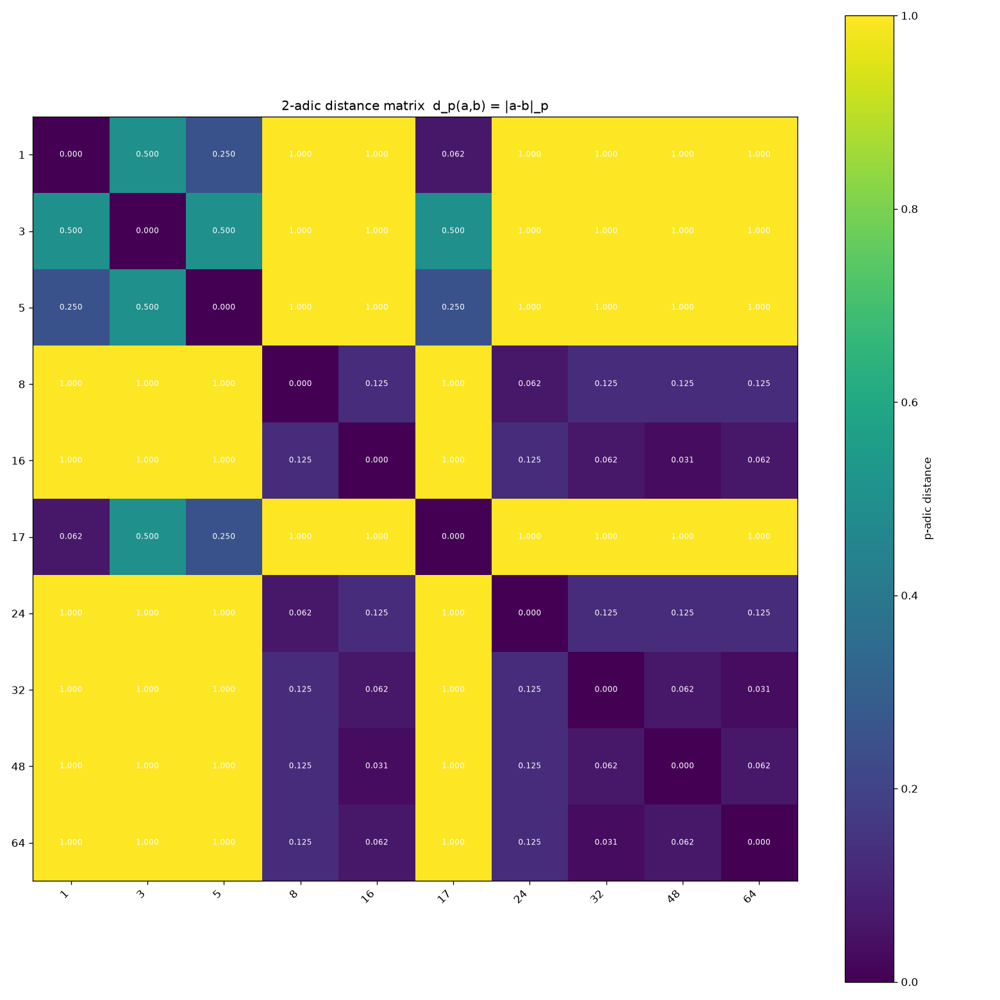

padic-embeddings
An embedding space whose geometry is governed by the p-adic metric instead of the usual Euclidean one — ultrametric balls, exact arithmetic, and exhaustive triangle-inequality verification.

The idea
Machine learning embeddings almost always use Euclidean distance. But there are other metrics — and the p-adic metric is one of the most alien: two numbers are “close” if they share a large power of p as a factor, regardless of how numerically far apart they appear on the number line. It is an ultrametric: every triangle is isosceles, and the strong triangle inequality d(a, c) ≤ max(d(a, b), d(b, c)) holds everywhere.
This package implements the p-adic valuation and metric exactly using
fractions.Fraction, verifies the ultrametric property exhaustively over
720 ordered triples (zero violations), and demonstrates hierarchical clustering
by p-adic residue classes.
The mathematics
p-adic valuation: v_p(n) = largest k such that p^k | n
p-adic absolute value: |x|_p = p^(-v_p(x))
p-adic distance: d_p(a, b) = |a - b|_p
All distances computed as fractions.Fraction (exact, no float rounding)
Ultrametric (strong triangle inequality):
d(a, c) ≤ max(d(a, b), d(b, c))
Verified exhaustively: 720 ordered triples, 0 violations
Demo items: [1, 3, 5, 8, 16, 17, 24, 32, 48, 64] under p = 2
d_2(1, 17) = 1/16 = 0.0625
because 17 - 1 = 16 = 2^4 → v_2(16) = 4 → |16|_2 = 1/16
String embedding: SHA-256(item) mod 2^20
(deterministic, unlike Python's hash())
Hierarchical clustering under the p-adic metric naturally produces nested balls: residue classes mod p𝑘 form balls of radius p⁻𝑘, perfectly nested as k increases. This gives a canonical tree structure over any p-adic dataset.
Figures & animations
p-adic distance matrix (p=2)
Pairwise p-adic distances for items [1, 3, 5, 8, 16, 17, 24, 32, 48, 64]. Items sharing large powers of 2 appear close (dark) regardless of numeric proximity.
Run it
git clone https://github.com/caelum0x/awesome-mad-projects.git cd padic-embeddings pip install -e . python -m padic_embeddings # demo with p=2 python -m padic_embeddings --p 3 # demo with p=3 python -m pytest tests/ -v